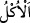
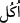
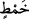

aşağısına olan yükseklik on sekiz fersahtı. Onların suyu, dağın nihayetinde vâdînin en
tepesinden bir pınardan gelirdi. Bazen Yemen vâdîlerinden taşan sular onların sularıyla
birleşir ve zarar verirdi.”
Ebü’l-Leys der ki: “Sebelilerin suları iki dağın arasından akarak onlara ancak on
günde gelirdi.” Şehirlerinin yöneticisi olan Belkıs’tan, asıl sularla fazlalık yağmur ve
kaynak sularının toplanacağı dağın ağız kısmına sağlam taştan bir sed yapmasını
istediler.
Süheylî, Kitabü’t-Ta’rif ve’l-i’lâm’da der ki: “Bu su bendini Sebe b. Yeşcüb binâ
ettirmişti. Yeşcüb bendi mermerden yaptırmış ve yetmiş vâdînin suyunu ona bağlamıştı.
Ancak bend tamamlanmadan vefat etti ve bend onun ölümünden sonra tamamlandı.”
O sedde üç kanal yaptı. En üstteki kanal açıldığında akan su ile ekinlerini ve
bahçelerini sulayacaklardı. Su kâfi gelmez ve azalırsa ortadaki ve en sondaki kanallar
açılacaktı. Onlar on üç peygamberi yalanladılar. Son peygamberleri, Zi’l-idgâr b.
Ceyşân’ın padişahlığı zamanında, Hz. İsa’nın göğe yükseltilmesinden sonra geldi. Onu
çok incittiler. Hak Sübhânehu Teâlâ, o bendin altından çöl fareleri çıkartıp delik/yarık
açmalarını emretti. Herkesin uykuda olduğu bir gece yarısı sed yıkıldı, sel gelip evlerini
ve bahçelerini kapladı. Birçok insan ve hayvan helâk oldu.
Fethu’r-Rahmân’da der ki: “Biz Sebelilere güç yetirilemeyecek bir sel gönderdik. Bu
sel seddi tahrib etti. İki dağın arası su ile doldu. Sel, bağları, bahçeleri ve dağa
kaçmaya fırsat bulamayan nice insanları önüne katıp götürdü. Onların malları ve
mülkleri su altında kaldı. Kurtulanlar başka belde ve ülkelere dağılıp gittiler ve bu
hususta darb-ı mesel oldular.”
“Onların” zikredilen “iki bahçesini, buruk yemişli,” acı ürünleri olan “acı ılgınlı
ve içinde biraz da sedir ağacı bulunan iki (harap) bahçeye çevirdik.” Onların yerine
kendilerine bunları verdik.
“__WORD__ bir şeyin başka bir şeyle değiştirilmesi demektir. “__WORD__ ve “__WORD__ yenen şeyin
ismidir. “__WORD__ ise yenilmesi mümkün olmayacak kadar tadı acılaşmış olan her bitkidir.
Bazı kıraatlarda “__WORD__ kelimesi “__WORD__ kelimesine izâfe edilerek okunmuştur. Buna göre
“__WORD__ meyvesi acı olan veya dikenli olan her ağaçtır. Yahut Buhârî’nin dediği gibi
misvak ağacıdır. “__WORD__ ise onun meyvesidir. el-Muhtâr’da der ki: “__WORD__ yenilen,
meyvesi olan bir çeşit misvak ağacıdır.
“İki bahçe”nin harap olmuş hallerinin de “iki bahçe” diye isimlendirilmesi, önceki
ifâdeye benzemesi için ve alay etmek maksadıyladır.
“__WORD__ ılgın ağacı veya ılgına benzer ılgından daha büyük meyvesiz bir ağaçtır.
Şeyh Sa’dî der ki:
Kötülük yapıyorsan, iyilik umma.
Gezengebîn ağacından üzüm asla alınmaz.
Beyzâvî der ki: “Âyette sedir ağacının az olarak vasfedilmesi, sedir ağacının meyvesi
olan Arabistan kirazının yenilmesi hoş olduğu içindir. Bu yüzden bu ağaç bağlara ve